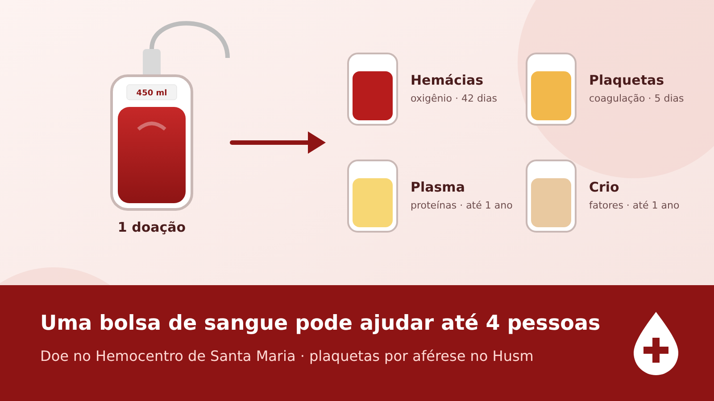

Ninguém fica sem transfusão por falta de doador
O sangue usado nos hospitais vem de um estoque coletivo e é distribuído conforme a necessidade médica. A doação de "reposição" é um gesto de solidariedade, não uma condição para ser atendido.
A dúvida é comum nos corredores dos hospitais. Pais que acompanham filhos internados, muitas vezes à espera de uma bolsa de plaquetas, ouvem o pedido de "repor" o sangue usado e temem que, sem doadores na família, o tratamento pare.
Em Santa Maria, o sangue, o plasma e as plaquetas que chegam aos leitos saem de uma rede pública. O principal fornecedor é o Hemocentro Regional de Santa Maria (Hemosm), ligado ao Hemorgs e à Secretaria Estadual da Saúde. Ele atende os 33 municípios da 4ª Coordenadoria Regional de Saúde e cerca de 15 instituições, entre elas o Hospital Universitário (Husm), o Hospital Regional, o Pronto Atendimento Municipal e clínicas renais.
O Husm tem serviço próprio de hemoterapia, onde é feita a coleta de plaquetas por aférese. Hospitais como o Hospital de Caridade Astrogildo de Azevedo contam com uma agência transfusional, que guarda as bolsas, faz os testes de compatibilidade e libera a transfusão para o leito.
Sangue, plasma e plaquetas: o que é cada um
Uma bolsa doada não vai inteira para um paciente. Ela é centrifugada e separada em até quatro componentes, por isso uma única doação pode ajudar até quatro pessoas.

Concentrado de hemácias
Leva oxigênio ao corpo. Usado em cirurgias, acidentes e anemias graves.
35 a 42 dias, refrigeradoPlaquetas
Fazem o sangue coagular. Essenciais para pacientes com câncer, leucemia, em quimioterapia ou com dengue grave.
Só 5 diasPlasma
Repõe proteínas e fatores de coagulação. Usado em queimados, hemorragias e doenças do fígado.
Até 1 ano, congeladoCrioprecipitado
Concentra fatores específicos de coagulação, para hemorragias graves.
Até 1 ano, congelado"As plaquetas são a nossa maior dificuldade, porque elas têm durabilidade de apenas cinco dias." Hemocentro Regional de Santa Maria, ao Diário de Santa Maria
Por isso não dá para fazer estoque grande de plaquetas: é preciso que pessoas doem toda semana.
Validades aproximadas, segundo as normas técnicas de hemoterapia; podem variar conforme o método de preparo.
Da doação à bolsa no leito
O sangue não é "de" quem doou nem "de" um paciente. Ele entra num estoque regional e sai para quem precisa primeiro, segundo critério médico.
Doação
O voluntário passa por triagem e doa cerca de 450 ml no hemocentro ou numa coleta externa.
Testes
A bolsa é testada para HIV, hepatites B e C, sífilis, doença de Chagas e HTLV, e tem o tipo sanguíneo identificado.
Separação
A bolsa é dividida em hemácias, plaquetas, plasma e crioprecipitado, cada um guardado na temperatura certa.
Pedido do hospital
O médico prescreve a transfusão; a agência transfusional do hospital solicita os componentes ao hemocentro.
Compatibilidade
Antes de liberar a bolsa, o laboratório cruza o sangue do paciente com o do doador.
Transfusão
A bolsa vai para o leito, e a enfermagem acompanha o paciente durante e depois do procedimento.
Quando o estoque aperta, a prioridade é clínica: emergências e pacientes em risco vêm antes de cirurgias que podem ser remarcadas. Em março de 2026, o Hemosm fez apelo urgente por doadores dos tipos O+, O-, A+ e A-.
Quem não tem doador fica sem?
Não. A transfusão é feita quando o médico indica, com o que houver no estoque, independentemente de a família ter levado doadores.
O pedido de reposição existe porque ajuda a recompor o estoque que todos usam. Mas a legislação brasileira não permite condicionar o atendimento à apresentação de doadores. A Constituição garante o direito à saúde e proíbe o comércio de sangue, e a Lei do Sangue (Lei 10.205/2001) define a doação como voluntária e altruísta.
Quem se sentir pressionado pode procurar a ouvidoria do hospital, a Ouvidoria do SUS (136) ou o Procon.
"O paciente não pode ser penalizado ou ter seu atendimento condicionado à apresentação de familiares." Gabrielle Brandão, advogada especialista em Direito Médico, ao Terra
Como a família pode ajudar
- Chamar amigos, colegas e vizinhos para doar no Hemosm em nome do paciente, informando nome completo e hospital.
- Para plaquetas, procurar doadores para aférese no Husm.
- Compartilhar esta página: cada doação ajuda o paciente e quem está no leito ao lado.
Como funciona a doação de plaquetas por aférese
Uma máquina retira o sangue, separa só as plaquetas e devolve o restante ao doador pelo mesmo braço ou pelo outro. O procedimento leva de 60 a 90 minutos e rende o equivalente às plaquetas de várias doações comuns.
Em Santa Maria, a coleta por aférese é feita no Husm e deve ser agendada diretamente com o serviço de hemoterapia do hospital. Os critérios são um pouco mais rígidos que os da doação comum.
Onde doar e quem cuida do sangue
Endereços dos hemocentros e serviços que coletam, processam ou transfundem sangue em Santa Maria e no Rio Grande do Sul.
Em Santa Maria
Hemocentro Regional de Santa Maria (Hemosm)
Husm — Serviço de Hemoterapia
Hospital de Caridade Astrogildo de Azevedo
Hemocentros no Rio Grande do Sul
Hemorgs — Hemocentro do Estado
Hemocs — Hemocentro Regional
Hemopasso — Hemocentro Regional
Hemopel — Hemocentro Regional
Hemosar — Hemocentro Regional
Hemonúcleos regionais
Endereços e telefones da Hemorrede pública do RS e das secretarias de saúde. Horários e contatos mudam com frequência: ligue antes de ir. Agendamento no Hemosm também pela carta de serviços da Secretaria Estadual da Saúde.
Quem pode doar sangue
Esteja descansado e alimentado. Homens podem doar a cada 2 meses; mulheres, a cada 3.
Fontes
- Hemocentro alerta para baixa nos estoques — Diário de Santa Maria, 30/03/2026
- Hemocentro de Santa Maria na Semana do Doador — UFSM, 13/06/2025
- Hemocentro reforça estratégias para estoques de sangue e plaquetas — Diário de Santa Maria, 28/12/2023
- Hospitais podem exigir doação de familiares? — Terra, 24/06/2026
- Endereços da Hemorrede Pública do RS — Governo do RS
- Hemocs — Hemocentro Regional de Caxias do Sul — SES-RS, 2026
- Husm — endereço e horário — HU Brasil/Ebserh
- Lei 10.205/2001 — Planalto
- Doação de plaquetas por aférese — Hemepar